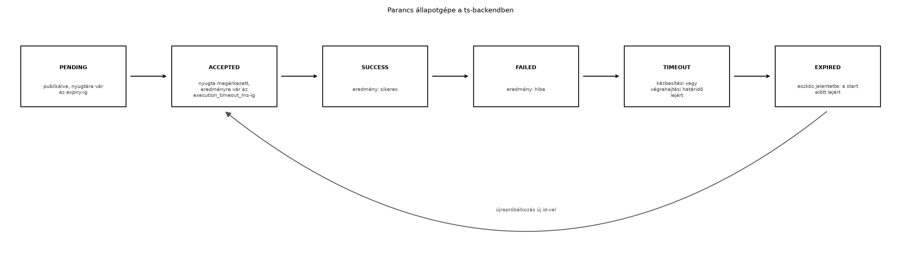

A TerraSense üvegházban a ts-node szenzorcsomópont
nemcsak mér, hanem beavatkozik is: az öntözőszelepet nyitja és zárja. A
felhasználó a felhőből szeretne például egy 10 perces öntözést
elindítani. Ez egy lefelé irányuló parancs: a backend
felől az eszköz felé halad. Az MQTT publish/subscribe modellje
alapvetően az eszköztől a felhő felé tartó telemetriára kényelmes;
lefelé a kézbesítés, a nyugtázás és az időkorlát kezelése külön
tervezést igényel. Ha a parancs elveszik, a felhasználó azt hiheti, hogy
öntözött; ha kétszer hajtódik végre, túlöntözés lehet a vége. Az alvó
eszköz pedig éppen nem figyel a hálózatra, ezért a parancsot késleltetve
kell kézbesíteni.
Ebben az alfejezetben megtervezzük a ts-backend és
ts-node közötti parancsutat: szabványos parancsüzenetet,
nyugtázási és eredményjelentési protokollt, backend oldali állapotgépet,
és az alvó eszközök kezelését.
Definíció. A parancs (command) a backend által kibocsátott, egy adott eszköznek címzett üzenet, amely egy művelet végrehajtását kéri. A TerraSense parancsüzenete legalább az alábbi mezőket tartalmazza:
id: a parancs egyedi azonosítója, amelyet a backend
generál (UUID vagy monoton növekvő szám). Ezzel hivatkozunk a nyugtára
és az eredményre, és ezzel biztosítjuk az idempotenciát.type: a művelet neve, például valve.open
vagy valve.close.params: típusfüggő paraméterobjektum, például
{"duration_ms": 600000, "max_on_time_ms": 600000}.expiry: a parancs legkésőbbi elkezdési
ideje, UTC epoch ms. Ha az eszköz eddig nem tudta elkezdeni a
végrehajtást, hagyja figyelmen kívül, és EXPIRED eredményt
küldhet. A már elkezdett művelet befejezését nem ez a mező szabályozza,
hanem a művelet saját időtartama (például
duration_ms).execution_timeout_ms: a backend által adott
végrehajtási határidő a nyugta után. Ha az eszköz az
ACCEPTED nyugta után ennyi időn belül nem küld eredményt, a
backend TIMEOUT állapotot állapít meg. Ez nem azonos az
expiry-vel: az expiry a legkésőbbi start, az
execution_timeout_ms a nyugta utáni eredményre
várakozás.timestamp (opcionális): a kibocsátás ideje,
hibakereséshez.A topic-konvenció az MQTT QoS, munkamenetek, retain, Last Will és MQTT 5 alfejezetben rögzített: a parancs az
terrasense/gh1/n001/cmdtopicra kerül, az eredmény pedig a
terrasense/gh1/n001/cmd/resulttopicra. Mindkét topic QoS 1, retain=false.
Példa parancs JSON-üzenetre:
{
"id": "c7d2f9a0-3b21-4f15-9e2f-6f9d2a3c1e4b",
"type": "valve.open",
"params": {
"duration_ms": 600000,
"max_on_time_ms": 600000
},
"expiry": 1735689600000,
"execution_timeout_ms": 610000,
"timestamp": 1735689000000
}A parancsazonosító akkor is egyedi marad, ha a backend újraindul;
UUID használata esetén nincs szükség központi számlálóra. Ha egy
parancsot újra kell küldeni (például a backend újraindul, vagy az eszköz
nem nyugtázta), ugyanazt az id-t kell megtartani.
A parancs életciklusa a backendben egy állapotgéppel írható le. A nyugta (acknowledgement, ACK) azt jelenti, hogy az eszköz megkapta és értelmezni tudta a parancsot; az eredmény (result) pedig a végrehajtás utáni állapotot jelenti. A kettő szétválasztása azért fontos, mert a végrehajtás hosszú lehet (például a szelep 10 percig nyitva marad), és a felhasználó előbb szeretné tudni, hogy a parancs eljutott-e.
A ts-backend a következő állapotokat tartja nyilván
minden parancsra:
PENDING: a parancsot a REST API fogadta, de még nem
publikáltuk MQTT-n, vagy publikáltuk, de nem érkezett nyugta.ACCEPTED: az eszköz nyugtázta a parancsot; a
végrehajtás folyamatban van.SUCCESS: az eszköz eredményt küldött, a végrehajtás
sikeres volt.FAILED: az eszköz eredményt küldött, de a végrehajtás
hibára futott.TIMEOUT: a backend saját határideje lejárt.
PENDING állapotban ez az expiry (legkésőbbi
start) elmúlását jelenti; ACCEPTED állapotban az
execution_timeout_ms letelte után nem érkezett
eredmény.EXPIRED: az eszköz jelezte, hogy a parancsot már a
kézbesítéskor lejártnak találta, ezért el sem kezdte (például alvásból
ébredve látta, hogy az expiry már elmúlt). Ez eszközoldali
döntés, nem a backend időzítője.Az átmeneteket az alábbi flow ábra mutatja.

Átmenettáblázattal:
| Jelenlegi állapot | Esemény | Következő állapot |
|---|---|---|
PENDING |
ACK érkezik az eszköztől | ACCEPTED |
PENDING |
eredmény érkezik ACK nélkül (rövid parancs) | SUCCESS vagy FAILED |
PENDING |
expiry (legkésőbbi start) lejár |
TIMEOUT |
ACCEPTED |
eredmény érkezik | SUCCESS vagy FAILED |
ACCEPTED |
acceptedAt + execution_timeout_ms lejár |
TIMEOUT |
PENDING vagy ACCEPTED |
az eszköz EXPIRED-et küld |
EXPIRED |
SUCCESS, FAILED, TIMEOUT,
EXPIRED |
bármely késői ACK vagy eredmény | változatlan (eldobva) |
A ts-backend a parancsokat a laborban memóriában tárolja
(ConcurrentHashMap), és ütemezetten ellenőrzi a
határidőket. Ez a labor-hatókör: éles rendszerben a parancs- és
eredményállapotot tartós tárolóba (például egy JDBC-táblába) kell
menteni, különben egy backend-újraindítás elveszíti a függő parancsokat.
A nyugta és az eredmény ugyanazon a cmd/result topicon
érkezik, és a parancsazonosító alapján azonosítja a backend, melyik
parancshoz tartozik. A terminális állapotot késői, duplikált vagy
sorrenden kívüli üzenet nem írhatja vissza. A nyugta és az eredmény
szétválasztható a status mezővel:
{
"id": "c7d2f9a0-3b21-4f15-9e2f-6f9d2a3c1e4b",
"status": "ACCEPTED",
"node_id": "n001",
"timestamp": 1735689001000
}Egy későbbi eredményüzenet:
{
"id": "c7d2f9a0-3b21-4f15-9e2f-6f9d2a3c1e4b",
"status": "SUCCESS",
"result": {
"valve_opened_ms": 600000
},
"node_id": "n001",
"timestamp": 1735689605000
}Definíció. Az idempotens
parancsvégrehajtás azt jelenti, hogy ugyanaz a parancsazonosító
többszöri kézbesítés esetén is legfeljebb egyszer vált ki hatást. Az
eszköz oldalán ezt a parancsazonosító megjegyzésével és a már
feldolgozott azonosítók halmazával érjük el (a
valve_set_target már idempotens a Aktuátorok: biztonságos vezérlés és visszajelzés
alfejezetből). Ha az eszköz egy SUCCESS eredményt adott, és
ugyanaz a parancs ismét megérkezik (például MQTT QoS 1 miatt), az eszköz
nem hajtja végre újra, csak újraküldi az eredményt.
Az MQTT 5 szabvány bevezet egy explicit request–response mintát: a
Response Topic és a Correlation Data user
property-k segítségével a kliens megadhatja, hova várja a választ, és
hogyan korrelálja a kéréssel. Ez különösen akkor hasznos, ha sok parancs
fut párhuzamosan, és nincs természetes topic-szétválasztás.
A TerraSense-ben azonban az eszközönkénti topic-struktúra
(cmd és cmd/result) eleve biztosítja a
korrelációt, és a parancsüzenetben szereplő id mező erre
elég. Az MQTT 5 feature-öket akkor érdemes bevetni, ha:
A döntést a következő táblázat foglalja össze:
| Szempont | Topic-alapú cmd/cmd/result |
MQTT 5 response topic |
|---|---|---|
| Egyszerűség | egyszerű, konvencióval rögzíthető | több metaadatot igényel |
| Skálázhatóság | eszközönként jó, központi válaszgyűjtőnél szűrés kell | korrelációs adat megkönnyíti a szűrést |
| MQTT verzió | 3.1.1 is támogatja | csak MQTT 5 kliens és broker |
| Fejlesztési hiba lehetősége | elgépelt topic, hiányzó feliratkozás | helytelen correlation data |
| TerraSense-ben | választott megoldás | nem használjuk a TerraSense-ben |
Az energiatakarékos ts-node az idő nagy részében alvó
állapotban van, és csak mintavételre vagy ébredési időzítőre kapcsolja
be a rádiót. Ilyenkor egy azonnali parancs nem ér el hozzá. Két alapvető
stratégia létezik:
Retained parancs a cmd topicra. Az
MQTT retained üzenet az utolsó értéket tárolja a broker, és minden új
feliratkozó megkapja. Ha a parancs retained, az alvó eszköz ébredéskor
feliratkozik, és azonnal megkapja. Hátránya: csak egyetlen parancs
tárolható, és ha új parancs érkezik, felülírja a régit. Ráadásul a
lejárt parancs retained maradhat, és az eszköz feleslegesen kap egy
elavult parancsot. Az expiry mezőt ilyenkor muszáj
ellenőrizni.
Backend oldali parancssor. A backend eltárolja a
függő parancsokat, és amikor az eszköz felébred (például MQTT
status üzenettel jelzi), a backend leküldi a következő
érvényes parancsot. Ez rugalmasabb, több parancsot is tárolhat, és
lejárat szerint rendezhet. Hátránya: a backendnek tudnia kell az eszköz
ébredéséről, és a kézbesítés késleltetése a backend–eszköz ciklusból
adódik.
A TerraSense-ben a retained parancsot használjuk a
következő ébredéskor végrehajtandó parancsra, de a cmd
topic retain=false alapbeállítását nem
módosítjuk; ehelyett a backend figyeli az eszköz status
jelenlétét, és akkor publikálja a függő parancsot. Ezzel elkerüljük az
elavult retained parancsokat, és megtartjuk a parancsok sorrendjét.
Ennek a teljes, alvó eszközöket kiszolgáló változatnak a megvalósítása
(a status üzenetre reagáló outbox és sorositó) nem része
ennek a labornak: a laborban az eszköz online, ezért a
CommandService közvetlenül publikál. Az alvó eszközök sora
a CommandService későbbi kiterjesztéseként építhető meg
ugyanarra a parancsmodellre.
Továbbvitt eredmény. A parancs- és eredménytopicok,
valamint a parancsazonosítóval történő korreláció később az Eszközárnyék és digitális iker: kívánt és jelentett
állapot alfejezetben a kívánt állapot (desired)
kézbesítésére, a Záróprojekt: a teljes TerraSense
rendszer összeállítása és átvétele alfejezetben pedig a teljes
parancsút integrációjára épül.
Ebben a laborban a ts-backend REST API-ján keresztül
küldünk egy valve.open parancsot. A backend MQTT-n
publikálja a terrasense/gh1/n001/cmd topicra. A
ts-node-t egy egyszerű Python MQTT-kliens szimulálja, mert
a Zephyr native_sim MQTT-stack integrációját az MQTT a gyakorlatban: Zephyr-kliens és Mosquitto
alfejezetben már elvégeztük; a labort a backendre és a protokollra
fókuszáljuk. A szimulátor feliratkozik a cmd topicra,
végrehajtja a szelepnyitást (szimulált GPIO), nyugtát küld, majd a
végrehajtás után eredményt a cmd/result topicra.
Munkakönyvtár:
mkdir -p ~/iot-labor/i049 && cd ~/iot-labor/i049
cp -r ../i043 ts-backend
mkdir -p ts-backend/src/main/java/com/terrasense/backend/{command,mqtt,controller,config}A ts-backend a A ts-backend váza:
REST API és egészségellenőrzés alfejezetben elkészített Spring Boot
váza. A Maven pom.xml-hez adjuk hozzá az Eclipse Paho Java
kliens függőséget:
<dependency>
<groupId>org.eclipse.paho</groupId>
<artifactId>org.eclipse.paho.client.mqttv3</artifactId>
<version>1.2.5</version>
</dependency>A Paho Java 1.2.5 a rögzített verzió; a backend a klasszikus v3 API-t használja. A Python szimulátor ezzel szemben Paho 2.x-et használ, mert a Python kliens 2.x callback API-ja eltér az 1.x-től; a két kliens verziója tudatosan különbözik.
A parancsmodell és az állapotgép osztályai. A
DeviceCommand a backend belső és REST-nézetű modellje; az
MQTT-n a szűkebb CommandPayload megy ki, hogy a belső
állapotmezők ne kerüljenek a huzalformátumba.
// src/main/java/com/terrasense/backend/command/CommandState.java
package com.terrasense.backend.command;
public enum CommandState {
PENDING, ACCEPTED, SUCCESS, FAILED, TIMEOUT, EXPIRED;
public boolean isTerminal() {
return this == SUCCESS || this == FAILED || this == TIMEOUT || this == EXPIRED;
}
}// src/main/java/com/terrasense/backend/command/DeviceCommand.java
package com.terrasense.backend.command;
import java.util.Collections;
import java.util.LinkedHashMap;
import java.util.Map;
import java.util.UUID;
public record DeviceCommand(
String id,
String site,
String nodeId,
String type,
Map<String, Object> params,
long expiry,
long executionTimeoutMs,
CommandState state,
long createdAt,
long acceptedAt,
long finishedAt,
Map<String, Object> result
) {
public DeviceCommand {
if (id == null || site == null || nodeId == null || type == null) {
throw new IllegalArgumentException("A parancs id/site/node/type mezője kötelező");
}
params = params == null ? Map.of()
: Collections.unmodifiableMap(new LinkedHashMap<>(params));
result = result == null ? Map.of()
: Collections.unmodifiableMap(new LinkedHashMap<>(result));
}
public static DeviceCommand create(String site, String nodeId, String type,
Map<String, Object> params,
long ttlMs, long executionTimeoutMs) {
long now = System.currentTimeMillis();
return new DeviceCommand(UUID.randomUUID().toString(), site, nodeId, type,
params, now + ttlMs, executionTimeoutMs,
CommandState.PENDING, now, 0L, 0L, Map.of());
}
public DeviceCommand withState(CommandState next, long at, Map<String, Object> newResult) {
if (state.isTerminal()) {
return this;
}
long accepted = next == CommandState.ACCEPTED ? at : acceptedAt;
long finished = next.isTerminal() ? at : finishedAt;
return new DeviceCommand(id, site, nodeId, type, params, expiry,
executionTimeoutMs, next, createdAt, accepted, finished,
newResult == null ? result : newResult);
}
public boolean isTerminal() {
return state.isTerminal();
}
}// src/main/java/com/terrasense/backend/command/CommandPayload.java
package com.terrasense.backend.command;
import com.fasterxml.jackson.annotation.JsonProperty;
import java.util.Map;
/** Az MQTT-n ténylegesen elküldött parancs huzalformátuma. */
public record CommandPayload(
String id,
String type,
Map<String, Object> params,
long expiry,
@JsonProperty("execution_timeout_ms") long executionTimeoutMs,
long timestamp
) {
public static CommandPayload from(DeviceCommand cmd) {
return new CommandPayload(cmd.id(), cmd.type(), cmd.params(), cmd.expiry(),
cmd.executionTimeoutMs(), cmd.createdAt());
}
}// src/main/java/com/terrasense/backend/command/CommandResult.java
package com.terrasense.backend.command;
import com.fasterxml.jackson.annotation.JsonIgnoreProperties;
import com.fasterxml.jackson.annotation.JsonProperty;
import java.util.Map;
@JsonIgnoreProperties(ignoreUnknown = true)
public record CommandResult(
String id,
CommandState status,
@JsonProperty("node_id") String nodeId,
Long timestamp,
Map<String, Object> result
) {
}// src/main/java/com/terrasense/backend/command/CommandRequest.java
package com.terrasense.backend.command;
import com.fasterxml.jackson.annotation.JsonProperty;
import java.util.Map;
public record CommandRequest(
String type,
Map<String, Object> params,
@JsonProperty("ttl_ms") Long ttlMs,
@JsonProperty("execution_timeout_ms") Long executionTimeoutMs,
String site
) {
}// src/main/java/com/terrasense/backend/command/CommandResultHandler.java
package com.terrasense.backend.command;
@FunctionalInterface
public interface CommandResultHandler {
void onResult(CommandResult result);
}Az MQTT-kapcsolatot kezelő, Spring beanként regisztrált gateway. A
Jackson szerializálja a CommandPayload rekordot, így a
params Map helyesen JSON-objektummá válik. A
gateway a cmd/result topicra iratkozik fel, és az eredményt
a regisztrált handlernek adja át; a handler beállítása miatt nincs
szükség arra, hogy a gateway ismerje a
CommandService-t.
// src/main/java/com/terrasense/backend/mqtt/MqttCommandGateway.java
package com.terrasense.backend.mqtt;
import com.fasterxml.jackson.databind.ObjectMapper;
import com.terrasense.backend.command.CommandPayload;
import com.terrasense.backend.command.CommandResult;
import com.terrasense.backend.command.CommandResultHandler;
import com.terrasense.backend.command.DeviceCommand;
import jakarta.annotation.PostConstruct;
import jakarta.annotation.PreDestroy;
import org.eclipse.paho.client.mqttv3.IMqttDeliveryToken;
import org.eclipse.paho.client.mqttv3.MqttCallbackExtended;
import org.eclipse.paho.client.mqttv3.MqttClient;
import org.eclipse.paho.client.mqttv3.MqttConnectOptions;
import org.eclipse.paho.client.mqttv3.MqttException;
import org.eclipse.paho.client.mqttv3.MqttMessage;
import org.eclipse.paho.client.mqttv3.persist.MemoryPersistence;
import org.slf4j.Logger;
import org.slf4j.LoggerFactory;
import org.springframework.beans.factory.annotation.Value;
import org.springframework.stereotype.Service;
import java.nio.charset.StandardCharsets;
import java.util.concurrent.atomic.AtomicReference;
@Service
public class MqttCommandGateway implements MqttCallbackExtended {
private static final Logger log = LoggerFactory.getLogger(MqttCommandGateway.class);
private static final String RESULT_TOPIC = "terrasense/+/+/cmd/result";
private final MqttClient client;
private final MqttConnectOptions options;
private final ObjectMapper objectMapper;
private final AtomicReference<CommandResultHandler> resultHandler = new AtomicReference<>();
public MqttCommandGateway(
ObjectMapper objectMapper,
@Value("${terrasense.mqtt.broker-url:tcp://localhost:1883}") String brokerUrl,
@Value("${terrasense.mqtt.client-id:ts-backend-cmd}") String clientId) {
this.objectMapper = objectMapper;
try {
this.client = new MqttClient(brokerUrl, clientId, new MemoryPersistence());
} catch (MqttException e) {
throw new IllegalStateException("Nem hozható létre az MQTT kliens", e);
}
this.options = new MqttConnectOptions();
options.setAutomaticReconnect(true);
options.setCleanSession(true);
options.setConnectionTimeout(10);
options.setKeepAliveInterval(30);
client.setCallback(this);
}
public void setResultHandler(CommandResultHandler handler) {
resultHandler.set(handler);
}
@PostConstruct
public void connect() {
try {
ensureConnected();
} catch (MqttException e) {
// A broker később is elindulhat; a publikálás előtt újra próbálkozunk.
log.error("Az MQTT broker a startupkor nem érhető el: {}", e.getMessage());
}
}
private synchronized void ensureConnected() throws MqttException {
if (!client.isConnected()) {
client.connect(options);
}
}
public void publishCommand(DeviceCommand command) throws MqttException {
ensureConnected();
String topic = "terrasense/" + command.site() + "/" + command.nodeId() + "/cmd";
final String payload;
try {
payload = objectMapper.writeValueAsString(CommandPayload.from(command));
} catch (Exception e) {
throw new IllegalStateException("A parancs nem szerializálható JSON-ná", e);
}
MqttMessage message = new MqttMessage(payload.getBytes(StandardCharsets.UTF_8));
message.setQos(1);
client.publish(topic, message).waitForCompletion(5_000);
log.info("Parancs publikálva: topic={}, id={}, type={}", topic, command.id(), command.type());
}
@Override
public void connectComplete(boolean reconnect, String serverURI) {
try {
client.subscribe(RESULT_TOPIC, 1);
log.info("Feliratkozás kész: {} (reconnect={})", RESULT_TOPIC, reconnect);
} catch (MqttException e) {
log.error("A cmd/result feliratkozás nem sikerült", e);
}
}
@Override
public void messageArrived(String topic, MqttMessage message) {
String json = new String(message.getPayload(), StandardCharsets.UTF_8);
try {
CommandResult result = objectMapper.readValue(json, CommandResult.class);
CommandResultHandler handler = resultHandler.get();
if (handler == null) {
log.warn("Nincs eredménykezelő, eldobott üzenet: {}", json);
return;
}
handler.onResult(result);
} catch (Exception e) {
log.warn("Érvénytelen cmd/result üzenet a(z) {} topicon: {}", topic, json, e);
}
}
@Override
public void connectionLost(Throwable cause) {
log.warn("Az MQTT kapcsolat megszakadt; automatikus újracsatlakozás", cause);
}
@Override
public void deliveryComplete(IMqttDeliveryToken token) {
// A QoS 1 kézbesítési nyugta nem azonos a parancs végrehajtásának eredményével.
}
@PreDestroy
public void close() {
try {
if (client.isConnected()) {
client.disconnect();
}
client.close();
} catch (MqttException e) {
log.warn("Az MQTT kapcsolat lezárása nem sikerült", e);
}
}
}A CommandService a parancsok tárolója, az
eredményfeldolgozó és a határidőfigyelő. A
ConcurrentHashMap és a computeIfPresent
biztosítja, hogy egy terminális állapotot későbbi ACCEPTED
vagy ismételt eredmény ne írjon vissza. A PENDING a
kézbesítési határidőig (expiry), az ACCEPTED a
végrehajtási határidőig (execution_timeout_ms) vár; a kettő
külön időkorlát.
// src/main/java/com/terrasense/backend/command/CommandService.java
package com.terrasense.backend.command;
import com.terrasense.backend.mqtt.MqttCommandGateway;
import org.slf4j.Logger;
import org.slf4j.LoggerFactory;
import org.springframework.http.HttpStatus;
import org.springframework.scheduling.annotation.Scheduled;
import org.springframework.stereotype.Service;
import org.springframework.web.server.ResponseStatusException;
import java.util.Comparator;
import java.util.LinkedHashMap;
import java.util.List;
import java.util.Map;
import java.util.Optional;
import java.util.concurrent.ConcurrentHashMap;
import java.util.concurrent.ConcurrentMap;
@Service
public class CommandService implements CommandResultHandler {
private static final Logger log = LoggerFactory.getLogger(CommandService.class);
private static final long DEFAULT_TTL_MS = 30_000;
private static final long DEFAULT_DURATION_MS = 600_000;
private static final long MAX_DURATION_MS = 600_000;
private static final long MAX_EXECUTION_TIMEOUT_MS = 3_600_000;
private final ConcurrentMap<String, DeviceCommand> commands = new ConcurrentHashMap<>();
private final MqttCommandGateway gateway;
public CommandService(MqttCommandGateway gateway) {
this.gateway = gateway;
gateway.setResultHandler(this);
}
public DeviceCommand createAndPublish(String site, String nodeId, String type,
Map<String, Object> params,
long ttlMs, long executionTimeoutMs) {
String safeSite = (site == null || site.isBlank()) ? "gh1" : site.trim();
if (nodeId == null || nodeId.isBlank()) {
throw badRequest("A nodeId kötelező");
}
if (type == null || type.isBlank()) {
throw badRequest("A type kötelező");
}
Map<String, Object> safeParams = params == null
? new LinkedHashMap<>() : new LinkedHashMap<>(params);
long ttl = ttlMs > 0 ? ttlMs : DEFAULT_TTL_MS;
if (ttl < 1_000 || ttl > 600_000) {
throw badRequest("A ttl_ms 1000 és 600000 közé essen");
}
long duration = 0;
if ("valve.open".equals(type)) {
duration = longParam(safeParams, "duration_ms", DEFAULT_DURATION_MS);
if (duration < 1_000 || duration > MAX_DURATION_MS) {
throw badRequest("A duration_ms 1000 és 600000 közé essen");
}
long maxOnTime = longParam(safeParams, "max_on_time_ms", duration);
if (maxOnTime < duration || maxOnTime > MAX_DURATION_MS) {
throw badRequest("A max_on_time_ms nem lehet kisebb a duration_ms-nál");
}
safeParams.put("duration_ms", duration);
safeParams.put("max_on_time_ms", maxOnTime);
} else if ("valve.close".equals(type)) {
safeParams.remove("duration_ms");
safeParams.remove("max_on_time_ms");
} else {
throw badRequest("Ismeretlen parancstípus: " + type);
}
long execution = executionTimeoutMs > 0 ? executionTimeoutMs
: ("valve.open".equals(type) ? duration + 10_000 : 10_000);
long minimumExecution = "valve.open".equals(type) ? duration + 1_000 : 1_000;
if (execution < minimumExecution || execution > MAX_EXECUTION_TIMEOUT_MS) {
throw badRequest("Az execution_timeout_ms érvénytelen");
}
DeviceCommand command = DeviceCommand.create(safeSite, nodeId, type, safeParams,
ttl, execution);
commands.put(command.id(), command);
try {
gateway.publishCommand(command);
log.info("Parancs létrehozva: id={}, type={}, state={}",
command.id(), command.type(), command.state());
return command;
} catch (Exception e) {
DeviceCommand failed = command.withState(CommandState.FAILED,
System.currentTimeMillis(),
Map.<String, Object>of("error", "publish_failed",
"message", String.valueOf(e.getMessage())));
commands.put(command.id(), failed);
log.error("A parancs publikálása nem sikerült: id={}", command.id(), e);
throw new ResponseStatusException(HttpStatus.BAD_GATEWAY,
"A parancs publikálása nem sikerült", e);
}
}
@Override
public void onResult(CommandResult result) {
if (result.id() == null || result.status() == null) {
log.warn("Hiányos cmd/result üzenet: {}", result);
return;
}
DeviceCommand updated = commands.computeIfPresent(result.id(), (id, current) -> {
if (current.isTerminal()) {
log.info("Késői vagy ismételt eredmény eldobva: id={}, state={}, érkezett={}",
id, current.state(), result.status());
return current;
}
if (!isAllowed(current.state(), result.status())) {
log.warn("Érvénytelen állapotátmenet: id={}, {} -> {}",
id, current.state(), result.status());
return current;
}
log.info("Parancs állapot: id={}, {} -> {}", id, current.state(), result.status());
return current.withState(result.status(), System.currentTimeMillis(),
result.result() == null ? Map.<String, Object>of() : result.result());
});
if (updated == null) {
log.warn("Ismeretlen parancs eredménye: id={}", result.id());
}
}
private static boolean isAllowed(CommandState from, CommandState to) {
return switch (from) {
case PENDING -> to == CommandState.ACCEPTED || to == CommandState.SUCCESS
|| to == CommandState.FAILED || to == CommandState.EXPIRED;
case ACCEPTED -> to == CommandState.SUCCESS || to == CommandState.FAILED
|| to == CommandState.EXPIRED;
default -> false;
};
}
@Scheduled(fixedDelay = 1_000)
public void checkDeadlines() {
long now = System.currentTimeMillis();
commands.replaceAll((id, command) -> {
if (command.state() == CommandState.PENDING && now > command.expiry()) {
log.warn("A parancs kézbesítési határideje lejárt: id={}", id);
return command.withState(CommandState.TIMEOUT, now,
Map.<String, Object>of("reason", "latest_start_expired"));
}
if (command.state() == CommandState.ACCEPTED
&& now > command.acceptedAt() + command.executionTimeoutMs()) {
log.warn("A parancs végrehajtási határideje lejárt: id={}", id);
return command.withState(CommandState.TIMEOUT, now,
Map.<String, Object>of("reason", "execution_timeout"));
}
return command;
});
}
public Optional<DeviceCommand> find(String id) {
return Optional.ofNullable(commands.get(id));
}
public List<DeviceCommand> listForNode(String nodeId) {
return commands.values().stream()
.filter(command -> command.nodeId().equals(nodeId))
.sorted(Comparator.comparingLong(DeviceCommand::createdAt))
.toList();
}
private static long longParam(Map<String, Object> params, String name, long defaultValue) {
Object value = params.get(name);
if (value == null) {
return defaultValue;
}
if (!(value instanceof Number number)) {
throw badRequest(name + " nem szám");
}
return number.longValue();
}
private static ResponseStatusException badRequest(String message) {
return new ResponseStatusException(HttpStatus.BAD_REQUEST, message);
}
}Az ütemezett határidőfigyelőhöz engedélyezni kell a Spring ütemezést.
Ez a ts-backend induló alkalmazásosztályán vagy egy külön
konfigurációs osztályon is elhelyezhető; itt utóbbit használjuk.
// src/main/java/com/terrasense/backend/config/SchedulingConfig.java
package com.terrasense.backend.config;
import org.springframework.context.annotation.Configuration;
import org.springframework.scheduling.annotation.EnableScheduling;
@Configuration
@EnableScheduling
public class SchedulingConfig {
}A REST vezérlő a parancs létrehozását, állapotának lekérdezését és
egy node parancsainak listázását kínálja. A POST
202 Accepted választ ad, mert a parancs végrehajtása
aszinkron; a válasz Location fejlécében a parancs
lekérdezési URL-je szerepel.
// src/main/java/com/terrasense/backend/controller/CommandController.java
package com.terrasense.backend.controller;
import com.terrasense.backend.command.CommandRequest;
import com.terrasense.backend.command.CommandService;
import com.terrasense.backend.command.DeviceCommand;
import org.springframework.http.HttpStatus;
import org.springframework.http.ResponseEntity;
import org.springframework.web.bind.annotation.GetMapping;
import org.springframework.web.bind.annotation.PathVariable;
import org.springframework.web.bind.annotation.PostMapping;
import org.springframework.web.bind.annotation.RequestBody;
import org.springframework.web.bind.annotation.RequestMapping;
import org.springframework.web.bind.annotation.RestController;
import org.springframework.web.server.ResponseStatusException;
import java.net.URI;
import java.util.List;
@RestController
@RequestMapping("/api/devices/{nodeId}/commands")
public class CommandController {
private final CommandService commandService;
public CommandController(CommandService commandService) {
this.commandService = commandService;
}
@PostMapping
public ResponseEntity<DeviceCommand> create(@PathVariable String nodeId,
@RequestBody CommandRequest request) {
long ttl = request.ttlMs() == null ? 30_000 : request.ttlMs();
long execution = request.executionTimeoutMs() == null ? 0 : request.executionTimeoutMs();
DeviceCommand command = commandService.createAndPublish(request.site(), nodeId,
request.type(), request.params(), ttl, execution);
return ResponseEntity.accepted()
.location(URI.create("/api/devices/" + nodeId + "/commands/" + command.id()))
.body(command);
}
@GetMapping("/{commandId}")
public DeviceCommand get(@PathVariable String nodeId, @PathVariable String commandId) {
return commandService.find(commandId)
.filter(command -> command.nodeId().equals(nodeId))
.orElseThrow(() -> new ResponseStatusException(HttpStatus.NOT_FOUND,
"A parancs nem található"));
}
@GetMapping
public List<DeviceCommand> list(@PathVariable String nodeId) {
return commandService.listForNode(nodeId);
}
}Az application.yaml MQTT-beállítása (a Spring Boot váz
konfigurációjába illesztve):
terrasense:
mqtt:
broker-url: tcp://localhost:1883
client-id: ts-backend-cmdA szimulált ts-node Pythonban. A szimulátor Paho 2.x-et
használ, a callback csak validál és sorba ad; a hosszú szelepnyitást
külön munkaszál és időzítő végzi, így a hálózati ciklus és a keepalive
nem blokkol. A parancsot a expiry, a típus, a cél, a
paramétertartomány és a korábbi parancsazonosító alapján ellenőrzi még
az ACCEPTED előtt. A valve.close hosszú nyitás
közben is azonnal feldolgozódik, és a nyitás eredménye
closed_early jelzéssel zárul.
#!/usr/bin/env python3
"""ts-node-sim: a 17.1 parancsút szimulátora (paho-mqtt 2.x)."""
import json
import queue
import threading
import time
import paho.mqtt.client as mqtt
BROKER = "localhost"
PORT = 1883
SITE = "gh1"
NODE = "n001"
CMD_TOPIC = f"terrasense/{SITE}/{NODE}/cmd"
RESULT_TOPIC = f"terrasense/{SITE}/{NODE}/cmd/result"
MIN_DURATION_MS = 1_000
MAX_DURATION_MS = 600_000
work_queue: "queue.Queue[dict]" = queue.Queue()
processed: dict[str, dict] = {}
in_progress: set[str] = set()
state_lock = threading.Lock()
valve_lock = threading.Lock()
valve_open = False
open_cmd = None
open_started = 0.0
open_timer = None
shutdown = threading.Event()
client = None
def now_ms() -> int:
return int(time.time() * 1000)
def publish_result(payload: dict) -> None:
if client is not None:
client.publish(RESULT_TOPIC, json.dumps(payload), qos=1)
def command_expired(cmd: dict) -> bool:
expiry = cmd.get("expiry")
return (isinstance(expiry, (int, float)) and not isinstance(expiry, bool)
and now_ms() > int(expiry))
def valid_command(cmd: object) -> tuple[bool, str]:
if not isinstance(cmd, dict):
return False, "a parancs nem JSON-objektum"
if not isinstance(cmd.get("id"), str) or not cmd["id"]:
return False, "hiányzó vagy érvénytelen id"
if cmd.get("node_id") not in (None, NODE):
return False, "a parancs más node-nak szól"
if cmd.get("type") not in ("valve.open", "valve.close"):
return False, "ismeretlen parancstípus"
if not isinstance(cmd.get("expiry"), (int, float)) or isinstance(cmd.get("expiry"), bool):
return False, "hiányzó vagy érvénytelen expiry"
params = cmd.get("params", {})
if not isinstance(params, dict):
return False, "a params nem objektum"
if cmd["type"] == "valve.open":
duration = params.get("duration_ms")
if not isinstance(duration, int) or isinstance(duration, bool):
return False, "a duration_ms nem egész szám"
if duration < MIN_DURATION_MS or duration > MAX_DURATION_MS:
return False, "a duration_ms a megengedett tartományon kívül van"
max_on_time = params.get("max_on_time_ms", duration)
if not isinstance(max_on_time, int) or isinstance(max_on_time, bool):
return False, "a max_on_time_ms nem egész szám"
if max_on_time < duration or max_on_time > MAX_DURATION_MS:
return False, "a max_on_time_ms érvénytelen"
return True, ""
def result_payload(cmd: dict, status: str, result: dict | None = None) -> dict:
payload = {
"id": cmd["id"],
"status": status,
"node_id": NODE,
"site": SITE,
"timestamp": now_ms(),
}
if result is not None:
payload["result"] = result
return payload
def store_result(command_id: str, payload: dict) -> None:
with state_lock:
processed[command_id] = payload
in_progress.discard(command_id)
def finish_open(cmd: dict, started: float) -> None:
global valve_open, open_cmd, open_timer
with valve_lock:
if open_cmd is not cmd:
return
open_cmd = None
open_timer = None
valve_open = False
elapsed = int((time.monotonic() - started) * 1000)
payload = result_payload(cmd, "SUCCESS", {
"valve_opened_ms": elapsed,
"closed_early": False,
"reason": "duration_elapsed",
})
store_result(cmd["id"], payload)
publish_result(payload)
print(f"[ts-node-sim] szelep: CLOSED (időzítő, {elapsed} ms)")
def handle_open(cmd: dict) -> None:
global valve_open, open_cmd, open_started, open_timer
duration = int(cmd["params"]["duration_ms"])
max_on_time = int(cmd["params"].get("max_on_time_ms", duration))
effective = min(duration, max_on_time)
with valve_lock:
previous = open_cmd
previous_started = open_started
if open_timer is not None:
open_timer.cancel()
open_timer = None
open_cmd = cmd
open_started = time.monotonic()
valve_open = True
timer = threading.Timer(effective / 1000.0, finish_open,
args=(cmd, open_started))
timer.daemon = True
open_timer = timer
timer.start()
publish_result(result_payload(cmd, "ACCEPTED"))
print(f"[ts-node-sim] szelep: OPEN (max {effective} ms)")
if previous is not None and previous["id"] != cmd["id"]:
elapsed = int((time.monotonic() - previous_started) * 1000)
old_payload = result_payload(previous, "SUCCESS", {
"valve_opened_ms": elapsed,
"closed_early": True,
"superseded_by": cmd["id"],
})
store_result(previous["id"], old_payload)
publish_result(old_payload)
def handle_close(cmd: dict) -> None:
global valve_open, open_cmd, open_started, open_timer
with valve_lock:
previous = open_cmd
previous_started = open_started
valve_open = False
if open_timer is not None:
open_timer.cancel()
open_timer = None
open_cmd = None
open_started = 0.0
publish_result(result_payload(cmd, "ACCEPTED"))
close_payload = result_payload(cmd, "SUCCESS", {"valve_open": False})
store_result(cmd["id"], close_payload)
publish_result(close_payload)
if previous is not None:
elapsed = int((time.monotonic() - previous_started) * 1000)
open_payload = result_payload(previous, "SUCCESS", {
"valve_opened_ms": elapsed,
"closed_early": True,
"closed_by": cmd["id"],
})
store_result(previous["id"], open_payload)
publish_result(open_payload)
def handle_command(cmd: dict) -> None:
command_id = cmd["id"]
with state_lock:
previous = processed.get(command_id)
if previous is None and command_id in in_progress:
previous = result_payload(cmd, "ACCEPTED")
if previous is None:
in_progress.add(command_id)
if previous is not None:
print(f"[ts-node-sim] duplikált parancs, eredmény újraküldve: {command_id}")
publish_result(previous)
return
if command_expired(cmd):
payload = result_payload(cmd, "EXPIRED",
{"reason": "a parancs a kézbesítéskor már lejárt"})
store_result(command_id, payload)
publish_result(payload)
print(f"[ts-node-sim] lejárt parancs: {command_id}")
return
if cmd["type"] == "valve.open":
handle_open(cmd)
else:
handle_close(cmd)
def execute() -> None:
while not shutdown.is_set():
try:
cmd = work_queue.get(timeout=0.5)
except queue.Empty:
continue
if cmd is None:
work_queue.task_done()
break
try:
handle_command(cmd)
except Exception as exc:
print(f"[ts-node-sim] hiba: {exc}")
with state_lock:
in_progress.discard(cmd.get("id"))
if isinstance(cmd, dict) and isinstance(cmd.get("id"), str):
payload = result_payload(cmd, "FAILED", {"error": str(exc)})
store_result(cmd["id"], payload)
publish_result(payload)
finally:
work_queue.task_done()
def on_connect(client, userdata, flags, reason_code, properties) -> None:
if reason_code.is_failure:
print(f"[ts-node-sim] kapcsolódási hiba: {reason_code}")
return
client.subscribe(CMD_TOPIC, qos=1)
print(f"[ts-node-sim] feliratkozva: {CMD_TOPIC}")
def on_disconnect(client, userdata, disconnect_flags, reason_code, properties) -> None:
print(f"[ts-node-sim] kapcsolat bontva: {reason_code}")
def on_message(client, userdata, msg) -> None:
try:
cmd = json.loads(msg.payload.decode("utf-8"))
except (UnicodeDecodeError, json.JSONDecodeError) as exc:
print(f"[ts-node-sim] érvénytelen JSON: {exc}")
return
ok, reason = valid_command(cmd)
if not ok:
print(f"[ts-node-sim] elutasítva ({reason})")
if isinstance(cmd, dict) and isinstance(cmd.get("id"), str):
publish_result(result_payload(cmd, "FAILED", {"error": reason}))
return
work_queue.put(cmd)
def main() -> None:
global client
client = mqtt.Client(mqtt.CallbackAPIVersion.VERSION2, client_id="ts-node-sim")
client.on_connect = on_connect
client.on_disconnect = on_disconnect
client.on_message = on_message
client.reconnect_delay_set(min_delay=1, max_delay=30)
worker = threading.Thread(target=execute, daemon=True)
worker.start()
try:
client.connect(BROKER, PORT, keepalive=60)
client.loop_forever()
except OSError as exc:
raise SystemExit(f"[ts-node-sim] nem érhető el a broker: {exc}") from exc
except KeyboardInterrupt:
print("[ts-node-sim] leállítás")
finally:
shutdown.set()
work_queue.put(None)
try:
client.disconnect()
except Exception:
pass
if __name__ == "__main__":
main()A Python-környezetet a könyv egészében ugyanígy hozzuk létre; a Paho
2.x kötelező, mert a callback-szignatúrák eltérnek az 1.x verziótól. A
CallbackAPIVersion.VERSION2 használatával a
on_connect ötparaméteres, a reason_code pedig
ReasonCode objektum.
cd ~/iot-labor/i049
python3 -m venv .venv
. .venv/bin/activate
python -m pip install --upgrade pip
python -m pip install "paho-mqtt==2.1.0"A futtatáshoz indítsuk el a Mosquitto brokert a közös stackből (a
szolgáltatás és a konténer neve is lab-broker), majd a
backendet és a szimulátort. A backend a ts-backend
könyvtárból fut, a szimulátor a saját virtuális környezetéből.
# Mosquitto indítása a ~/iot-labor/stack segítségével
docker compose -f ~/iot-labor/stack/compose.yaml up -d lab-broker
# Backend build és futtatás
cd ~/iot-labor/i049/ts-backend && mvn spring-boot:run
# Szimulátor egy másik terminálban
cd ~/iot-labor/i049 && . .venv/bin/activate && python ts-node-sim.py
# Parancs küldése
curl -i -X POST http://localhost:8080/api/devices/n001/commands \
-H "Content-Type: application/json" \
-d '{"type":"valve.open","params":{"duration_ms":10000},"ttl_ms":30000}'A POST válasza 202 Accepted, a törzsben a
PENDING állapotú parancs szerepel, a Location
fejlécben pedig a lekérdezési útvonal. A parancs állapotát ezen az
útvonalon vagy a lista-végponton kérdezhetjük le:
curl -s http://localhost:8080/api/devices/n001/commands/<parancs-id>
curl -s http://localhost:8080/api/devices/n001/commandsIllusztratív kimenet a backend naplójából (a pontos időbélyegek és azonosítók eltérnek):
Parancs létrehozva: id=..., type=valve.open, state=PENDING
Parancs publikálva: topic=terrasense/gh1/n001/cmd, id=..., type=valve.open
Parancs állapot: id=..., PENDING -> ACCEPTED
Parancs állapot: id=..., ACCEPTED -> SUCCESSA szimulátor termináljában a parancs, az ACCEPTED nyugta
és a szelepállapot jelenik meg; a 10 másodperces nyitás után a
SUCCESS eredmény a cmd/result topicra kerül. A
naplóban a TIMEOUT akkor jelenik meg, ha a parancs a
PENDING fázisban a ttl_ms alatt nem kap
nyugtát, vagy az ACCEPTED után az
execution_timeout_ms alatt nem érkezik eredmény. A
TIMEOUT és az EXPIRED különbözik: előbbi a
backend saját határideje, utóbbi az eszköz jelzése arról, hogy a
parancsot már a kézbesítéskor lejártnak találta.
Takarítás:
docker compose -f ~/iot-labor/stack/compose.yaml downA labor során létrehozott fájlok:
ts-backend/src/main/java/com/terrasense/backend/command/
alatt CommandState.java, DeviceCommand.java,
CommandPayload.java, CommandResult.java,
CommandRequest.java,
CommandResultHandler.java,
CommandService.java;
mqtt/MqttCommandGateway.java;
controller/CommandController.java;
config/SchedulingConfig.java; valamint a
ts-node-sim.py. A ~/iot-labor/i049 könyvtár
marad.
A parancsút működését a backend naplójában a parancsazonosítóval és
az állapotváltásokkal ellenőrizhetjük. A Mosquitto konténer logja
(docker logs lab-broker) mutatja a publikált üzenetek
topicjait és QoS-ét. A szimulátor print kimenete igazolja,
hogy a nyugta és az eredmény megérkezett. A
docker logs lab-broker a közös stack
lab-broker szolgáltatásának/konténerének naplóját mutatja;
más laborfelállásban a saját szolgáltatás- és konténernevet kell
használni.
Tipikus hibatünetek:
| Hibatünet | Lehetséges ok | Javítás |
|---|---|---|
A parancs PENDING marad |
Az eszköz nincs feliratkozva a cmd topicra, a topic
elgépelt, vagy a gateway nem tudott csatlakozni a brokerhez |
Ellenőrizze a szimulátor feliratkozását, a topic prefixet és a
docker ps / docker logs lab-broker
kimenetét |
A parancs a publikálás után azonnal FAILED |
A broker nem érhető el, vagy a publishCommand kivételt
dobott |
Indítsa el a broker szolgáltatást, és nézze meg a
backend publish_failed naplóbejegyzését |
| A nyugta megérkezik, de nincs eredmény | A szimulátor munkaszála kivételt dobott, az időzítő nem hívta meg a
finish_open-t, vagy a backend nem figyeli a
cmd/result topicot |
Vizsgálja a szimulátor stderr-jét, ellenőrizze a
connectComplete wildcard feliratkozását |
| Duplikált parancs végrehajtás | Az eszköz nem jegyzi meg a feldolgozott azonosítókat | A processed szótár és az in_progress
halmaz már kezeli az ismételt id-t; ellenőrizze, hogy a
szimulátor ezt a két adatszerkezetet használja |
A parancs PENDING-ben marad, majd TIMEOUT
lesz |
Az expiry (legkésőbbi start) lejárt, mert az eszköz nem
vette át a parancsot |
Növelje a ttl_ms-t az eszköz ébredési idejéhez, vagy
használjon alvó eszközökhöz outboxot |
A parancs ACCEPTED után TIMEOUT lesz |
Az execution_timeout_ms túl rövid, vagy az eredmény
elveszett |
Növelje az execution_timeout_ms-t, és ellenőrizze a
cmd/result kézbesítést |
| Az alvó eszköz nem kap parancsot | A laborban az eszköz online; az alvó eszközök outboxa nem része a labornak | Az alvó eszközökhöz a status üzenetre reagáló outboxot
kell megvalósítani |
A nyugta és az eredmény összemosása. Ha csak egy
üzenetet várunk a végrehajtás végén, a felhasználó hosszú ideig nem
tudja, hogy a parancs eljutott-e. A szelepnyitásnál ez különösen zavaró:
a ACCEPTED nyugta nélkül a backend nem tudja
megkülönböztetni a hálózati hibát a lassú végrehajtástól.
Az idempotencia elhanyagolása. Az MQTT QoS 1
legalább egyszer kézbesít, tehát duplikátumok előfordulhatnak. Ha az
eszköz minden valve.open parancsra újra kinyitja a
szelepet, a duplikátum túlöntözést okoz. A parancsazonosító alapú
deduplikáció kötelező.
Elavult retained parancs. Ha valaki mégis
retained cmd üzenetet használ, és az eszköz ébredéskor
feltétel nélkül végrehajtja, egy régi, lejárt parancs váratlan hatást
válthat ki. Az expiry mezőt mindig ellenőrizni
kell.
A két időkorlát összemosása. Az
expiry a legkésőbbi start, az
execution_timeout_ms a nyugta utáni eredményre várakozás.
Ha az expiry túl rövid, az alvó eszköz ébredése előtt
lejár; ha az execution_timeout_ms túl rövid, a lassú
végrehajtás miatt a backend hamarabb ad TIMEOUT-ot, mint
hogy az eszköz eredményt küldene. A két értéket külön kell az eszköz
viselkedéséhez igazítani.
Miért nem elegendő a parancs cmd topicra történő QoS 1
publikálása a megbízható parancskézbesítéshez? Milyen további
mechanizmusokra van szükség a végrehajtás igazolásához és a duplikátumok
kezeléséhez?
Egy ts-node percenként egyszer ébred fel, és 5
másodpercig hallgatja a rádiót. A backend egy valve.open
parancsot akar kézbesíteni. Az átlagos hálózati késleltetés MQTT-ben 200
ms, a maximális késleltetés 2 s. Mekkora legyen a parancs
expiry értéke, ha a parancsot a lehető leghamarabb végre
akarjuk hajtani, de nem akarunk feleslegesen hosszú várakozást?
Indokoljon.
Egészítse ki a ts-backend CommandService
osztályát úgy, hogy a cmd/result topicról érkező
EXPIRED állapotú eredmény esetén naplózza az eseményt, és a
parancsot EXPIRED állapotba állítsa. Készítsen
egységtesztet a CommandService állapotátmenetére.
A labor során a parancs ACCEPTED állapotban marad, de
SUCCESS soha nem érkezik. A szimulátor naplója szerint a
nyugta elküldésre került. Hol keresse a hibát? Soroljon fel legalább
három lehetséges okot, és mindegyikhez adjon ellenőrzési lépést.
A QoS 1 csak a brokerbe történő kézbesítést garantálja, de nem
garantálja, hogy az eszköz megkapta, és azt sem, hogy végrehajtotta. A
nyugta (ACK) igazolja a kézbesítést az eszközig, az eredményüzenet pedig
a végrehajtás sikerességét. A duplikátumok ellen a parancsazonosító
alapú deduplikáció véd. Az expiry a legkésőbbi startot
korlátozza, az execution_timeout_ms pedig a nyugta utáni
eredményre várakozást; a kettő együtt jelzi, ha a parancs nem hajtható
végre, illetve nem fejeződik be értelmes időn belül.
Az eszköz legfeljebb 60 s + 5 s = 65 s alatt ébred fel és hallgatja a
rádiót. A hálózati késleltetés maximuma 2 s, tehát a legrosszabb esetben
a parancs 65 s + 2 s = 67 s múlva juthat el az eszközhöz. A végrehajtás
(például a szelepnyitás) további időt vehet igénybe, de ez már nem az
expiry, hanem az execution_timeout_ms
hatásköre. Az expiry-t legalább 68 s-ra kell állítani;
érdemes 70 s környékére választani, hogy a normál kézbesítés ne ütközzön
a lejáratba. Az execution_timeout_ms ettől függetlenül a
tényleges végrehajtási időhöz igazodjon: rövid szelepnyitásnál néhány
másodperc, hosszú nyitásnál a duration_ms plusz tartalék.
Ugyanakkor ha a parancs a start előtt lejár, a felhasználót értesíteni
kell.
A CommandService már tartalmazza az EXPIRED
eredmény kezelését: az onResult a
CommandResult rekordot dolgozza fel, és a
PENDING vagy ACCEPTED állapotból engedi az
EXPIRED átmenetet. A feladat megoldása egy JUnit 5 +
Mockito teszt, amely a nyilvános onResult és
checkDeadlines API-n keresztül ellenőrzi az állapotot, a
késői nyugta és az ismételt eredmény eldobását, valamint a két külön
határidőt. A spring-boot-starter-test függőség a Spring
Boot vázban már szerepel.
// src/test/java/com/terrasense/backend/command/CommandServiceTest.java
package com.terrasense.backend.command;
import com.terrasense.backend.mqtt.MqttCommandGateway;
import org.junit.jupiter.api.Test;
import org.junit.jupiter.api.extension.ExtendWith;
import org.mockito.Mock;
import org.mockito.junit.jupiter.MockitoExtension;
import java.util.Map;
import static org.junit.jupiter.api.Assertions.assertEquals;
@ExtendWith(MockitoExtension.class)
class CommandServiceTest {
@Mock
private MqttCommandGateway gateway;
@Test
void expiredResultIsStored() {
CommandService service = new CommandService(gateway);
DeviceCommand command = service.createAndPublish("gh1", "n001", "valve.close",
Map.of(), 30_000, 10_000);
service.onResult(new CommandResult(command.id(), CommandState.EXPIRED,
"n001", System.currentTimeMillis(),
Map.<String, Object>of("reason", "device_expired")));
assertEquals(CommandState.EXPIRED,
service.find(command.id()).orElseThrow().state());
}
@Test
void acceptedThenSuccessIsStored() {
CommandService service = new CommandService(gateway);
DeviceCommand command = service.createAndPublish("gh1", "n001", "valve.close",
Map.of(), 30_000, 10_000);
service.onResult(new CommandResult(command.id(), CommandState.ACCEPTED,
"n001", System.currentTimeMillis(), Map.of()));
assertEquals(CommandState.ACCEPTED,
service.find(command.id()).orElseThrow().state());
service.onResult(new CommandResult(command.id(), CommandState.SUCCESS,
"n001", System.currentTimeMillis(), Map.of("valve_open", false)));
assertEquals(CommandState.SUCCESS,
service.find(command.id()).orElseThrow().state());
}
@Test
void lateAcceptedDoesNotOverrideSuccess() {
CommandService service = new CommandService(gateway);
DeviceCommand command = service.createAndPublish("gh1", "n001", "valve.close",
Map.of(), 30_000, 10_000);
service.onResult(new CommandResult(command.id(), CommandState.SUCCESS,
"n001", System.currentTimeMillis(), Map.of()));
service.onResult(new CommandResult(command.id(), CommandState.ACCEPTED,
"n001", System.currentTimeMillis(), Map.of()));
assertEquals(CommandState.SUCCESS,
service.find(command.id()).orElseThrow().state());
}
@Test
void repeatedResultDoesNotChangeTerminalState() {
CommandService service = new CommandService(gateway);
DeviceCommand command = service.createAndPublish("gh1", "n001", "valve.close",
Map.of(), 30_000, 10_000);
service.onResult(new CommandResult(command.id(), CommandState.SUCCESS,
"n001", System.currentTimeMillis(), Map.of()));
service.onResult(new CommandResult(command.id(), CommandState.FAILED,
"n001", System.currentTimeMillis(), Map.of("error", "kesoi_hiba")));
assertEquals(CommandState.SUCCESS,
service.find(command.id()).orElseThrow().state());
}
@Test
void pendingExpiryBecomesTimeout() throws InterruptedException {
CommandService service = new CommandService(gateway);
DeviceCommand command = service.createAndPublish("gh1", "n001", "valve.close",
Map.of(), 1_000, 10_000);
Thread.sleep(1_100);
service.checkDeadlines();
DeviceCommand timedOut = service.find(command.id()).orElseThrow();
assertEquals(CommandState.TIMEOUT, timedOut.state());
assertEquals("latest_start_expired", timedOut.result().get("reason"));
}
@Test
void acceptedExecutionTimeoutBecomesTimeout() throws InterruptedException {
CommandService service = new CommandService(gateway);
DeviceCommand command = service.createAndPublish("gh1", "n001", "valve.close",
Map.of(), 30_000, 1_000);
service.onResult(new CommandResult(command.id(), CommandState.ACCEPTED,
"n001", System.currentTimeMillis(), Map.of()));
Thread.sleep(1_100);
service.checkDeadlines();
DeviceCommand timedOut = service.find(command.id()).orElseThrow();
assertEquals(CommandState.TIMEOUT, timedOut.state());
assertEquals("execution_timeout", timedOut.result().get("reason"));
}
}A teszt a gateway Mockito-mockját használja, így nem
kell valódi broker; a createAndPublish a mock
publishCommand hívásán keresztül sikeresen létrehozza a
parancsot. A határidős tesztek rövid Thread.sleep-t
használnak, mert a CommandService valós rendszerórát olvas;
a laborban így a két időkorlát is végigpróbálható. A tesztek a laborban
futtathatók (mvn test), a könyv nem állítja, hogy itt
lefutottak.
Lehetséges okok és ellenőrzésük:
cmd/result
topicra. Ellenőrizze a
MqttCommandGateway.connectComplete metódusában a
subscribe hívást; a wildcard
terrasense/+/+/cmd/result lefedi-e a
terrasense/gh1/n001/cmd/result topicot. A
cleanSession=true miatt újracsatlakozáskor a
connectComplete fut le ismét, nem elég egyszer a
konstruktorban feliratkozni.id-t küld a nyugtában, mint az
eredményben. Hasonlítsa össze a nyugta és az eredmény
id mezőjét; ha nem egyezik, a backend nem tudja a
parancshoz kötni.finish_open-t. Nézze meg a szimulátor
stderr-jét; a handle_command kivételkezelése ilyenkor
FAILED eredményt küld, de az időzítő hibáját külön kell
vizsgálni.execution_timeout_ms lejárt, mielőtt az
eredmény megérkezett volna, és a backend TIMEOUT-ra
állította a parancsot. Ellenőrizze az
@Scheduled checkDeadlines futását, és hogy az eredmény
később érkezik-e a nyugta utáni határidőnél. Ez nem az
expiry lejárata: az expiry a start előtti
határidő.A ts-backend parancsútja a
terrasense/<site>/<node>/cmd topicra publikál,
az eszköz pedig a cmd/result topicra küld nyugtát és
eredményt. A huzalformátum az id, type,
params, expiry,
execution_timeout_ms és timestamp mezőket
tartalmazza; a CommandPayload szűkíti a belső
DeviceCommand modellt erre a formára. A backend állapotgépe
PENDING, ACCEPTED, SUCCESS,
FAILED, TIMEOUT, EXPIRED
állapotokat kezel, a terminális állapotokat késői üzenet nem írja
vissza, és az @Scheduled checkDeadlines külön kezeli a
PENDING kézbesítési (expiry) és az
ACCEPTED végrehajtási (execution_timeout_ms)
határidejét. A laborban az eszköz online, ezért a
CommandService közvetlenül publikál; az alvó eszközök
status üzenetre reagáló outboxa későbbi kiterjesztés. A
parancsok tárolása a laborban memóriában történik; éles rendszerben
tartós tárra van szükség. A laborban a ts-backend REST
API-val fogad parancsot, MQTT-n publikál, és egy Paho 2.x-es Python
szimulátor hajtja végre a szelepnyitást, nem blokkoló callbackkel,
expiry-, típus-, paraméter- és duplikátumellenőrzéssel. A
kulcsfájlok: CommandState.java,
DeviceCommand.java, CommandPayload.java,
CommandResult.java, CommandRequest.java,
CommandResultHandler.java,
CommandService.java, MqttCommandGateway.java,
CommandController.java, SchedulingConfig.java,
ts-node-sim.py. Továbbvitt eredmény. A
parancsazonosítóval történő korreláció, a cmd és
cmd/result topicok, valamint az állapotgép az Eszközárnyék és digitális iker: kívánt és jelentett
állapot alfejezetben a kívánt állapot kézbesítésére, a Záróprojekt: a teljes TerraSense rendszer összeállítása
és átvétele alfejezetben a teljes parancsút integrációjára épül.
Az MQTT publish/subscribe és QoS 1 definíciói az MQTT 3.1.1 és MQTT
5.0 szabványokon alapulnak. A labor a rögzített verziómátrix szerint
Spring Boot 3.3.4-et, Java 21-et, Paho Java 1.2.5-öt és Python
paho-mqtt 2.1.0-t használ; a Java gateway a klasszikus v3
API-t, a Python szimulátor a 2.x
CallbackAPIVersion.VERSION2 API-t használja. Az MQTT 5
request–response minta a szabvány Response Topic és
Correlation Data user property-ire épül, de a
TerraSense-ben a saját topic-konvenciót használjuk. A laborban szimulált
eszköz nem helyettesíti a valós Zephyr native_sim eszközt;
a teljes eszközszoftvert az MQTT a gyakorlatban:
Zephyr-kliens és Mosquitto alfejezet szerint kell integrálni.